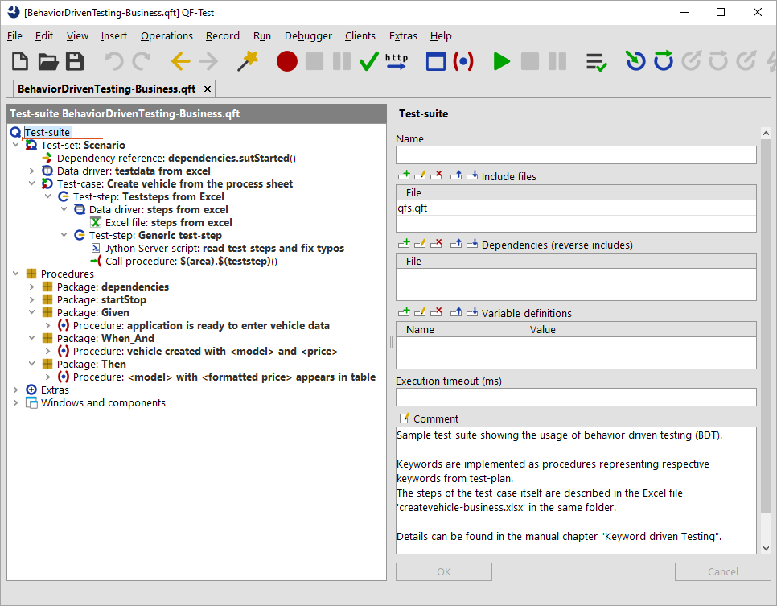

| Version 6.0.3 |
Describing test-cases from business perspective using Behavior-Driven Testing (BDT) requires actions from a
user's point of view. So those actions contain several interactions likes mouse-clicks or text-inputs.
You can find a sample test-suite at qftest-6.0.3/demo/keywords/behaviordriven_business/
BehaviorDrivenTesting-Business.qft.
The respective test-plan can be found at qftest-6.0.3/demo/keywords/behaviordriven_business/
createvehicle-business.xlsx.
Please take care to copy the demo folder to a project-related folder first and modify them there.
The "Create vehicle" test-case looks like this if it's described in the BDT manner from a business perspective:
This approach uses the keywords Given, When, And and Then
at the beginning of any sentence like the technical one.
The provided test-suite therefore contains the packages Given, When_And
and Then.
|
|  | ||
|
| Figure 28.7: Test-suite Behavior-driven testing from business perspective | ||
In order to prevent annoying typos a Server-script read test-steps and fix typos formats any steps to lower case and tries
to replace multiple blanks by one. This script is called directly before the procedure call of $(teststep).
In order to run the test-case on multiple test-data the sample was extended.
| Last update: 9/6/2022 Copyright © 1999-2022 Quality First Software GmbH |